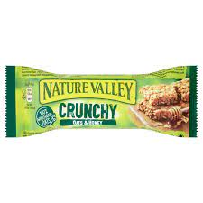
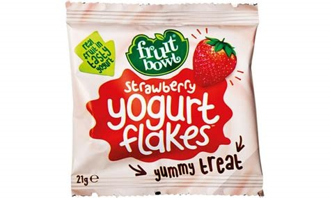
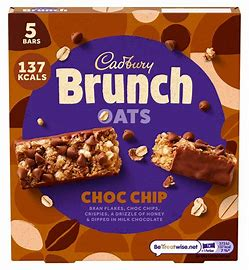

------------------------------------------------------------------------------------------------- -------------------------------------------------------------------------------------------------- -------------------------------------------------------------------------------------------------- --------------------------------------------------
 These Nature Valley bars are both healthy and tasty! They come in lots of different flavours, my personal flavour being honey, such as chocolate or peanut butter so there is bound to be a flavour that you will love. The main snack consists of rolled oats and honey and you get two thin bars per packet. They are excellent dipped in tea or just before excersising for a boost of energy. You can purchase the Nature Valleys in 10pk, 5pk or individually. The standard oats and honey bars are suitable for:
------------------------------------------------------------------------------------------------- -------------------------------------------------------------------------------------------------- -------------------------------------------------------------------------------------------------- --------------------------------------------------
 These scrumptious yoghurt flakes are one of the best options for a school snack! They come in individual packet with approximately 25 in each. You purchase a big bag of the small packets and they last for about a week. They are small pill sized yogurt balls with a jelly textured flavoured substance on the inside. They range in flavours from blackcurrant to strawberry and are a very fun sweet snack for all ages. These small balls of flavour can be sucked until there is none left or chewed into one gummy treat. It is a perfect snack for after lunch or quickly before an after school club. These tiny treats are:
------------------------------------------------------------------------------------------------- -------------------------------------------------------------------------------------------------- -------------------------------------------------------------------------------------------------- --------------------------------------------------
 Brunch bars are my go to when I am going to pack my snacks for school. You really can not go wrong with this Cadbury's chocolate snack! It may sound very unhealthy to start with but it is really a thick oat bar with small choc chips and half coated in a thin layer of smooth milk chocolate. They come in boxes of five and are individually wrapped in a thin shiny foil looking plastic which makes them great for travelling into school. They are not the healthiest snack in this blog so I wouldn't eat them every day but they are a very nice treat to look forward to. You can get the standard chocolate ones, raisin ones and even peanut ones! Fortunately, these tasty oat bars are:
------------------------------------------------------------------------------------------------- -------------------------------------------------------------------------------------------------- -------------------------------------------------------------------------------------------------- --------------------------------------------------
Here are some images of other snacks that I strongly reccomend:------------------------------------------------------------------------------------------------- -------------------------------------------------------------------------------------------------- -------------------------------------------------------------------------------------------------- --------------------------------------------------